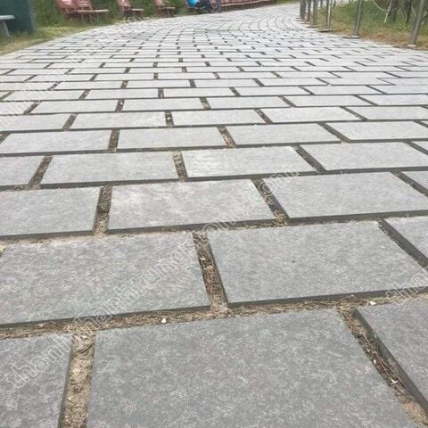
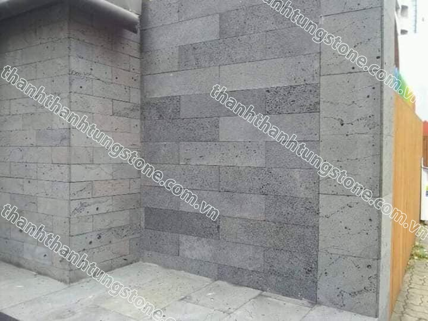
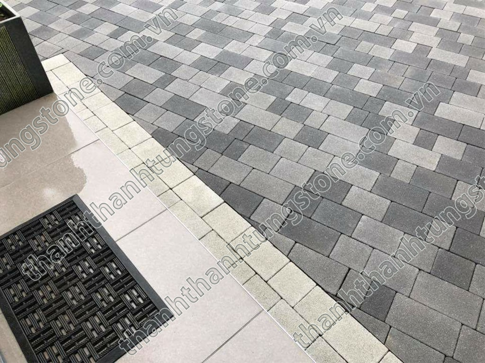

Ưu Nhược Điểm Của Đá Bazan Lát Sân Vườn – Có Nên Sử Dụng Không? 🌿🪨
Trong xu hướng thiết kế cảnh quan hiện đại, các vật liệu tự nhiên đang ngày càng được ưa chuộng nhờ vẻ đẹp bền vững và gần gũi với thiên nhiên. Trong số đó, đá bazan lát sân vườn nổi bật như một lựa chọn hàng đầu cho biệt thự, resort, quán cà phê sân vườn và các công trình ngoài trời cao cấp. Với gam màu mạnh mẽ, độ bền vượt trội cùng khả năng chống trơn trượt cực tốt, đá bazan không chỉ mang tính thẩm mỹ mà còn đáp ứng được yêu cầu sử dụng lâu dài. ✨
Tuy nhiên, bên cạnh những ưu điểm nổi bật, đá bazan vẫn tồn tại một vài hạn chế nhất định mà người dùng cần cân nhắc trước khi thi công. Hãy cùng Thanh Thanh Tùng Stone tìm hiểu chi tiết ưu và nhược điểm của dòng đá tự nhiên này nhé! 👇
1. Đá Bazan Là Gì? 🪨
Đá bazan là loại đá tự nhiên hình thành từ quá trình nguội đi của dung nham núi lửa trong hàng triệu năm. Chính vì được tạo nên dưới nhiệt độ và áp suất cực lớn nên đá bazan sở hữu kết cấu vô cùng chắc chắn, cứng cáp và bền bỉ.
Tại Việt Nam, đá bazan được khai thác nhiều tại các khu vực như Gia Lai, Đắk Nông, Bình Định và Thanh Hóa. Sau khi khai thác, đá sẽ được gia công thành nhiều bề mặt khác nhau như:
- Đá bazan khò mặt 🔥
- Đá bazan băm mặt ⚒️
- Đá bazan mài honed ✨
- Đá bazan cắt quy cách 📏
Nhờ sự đa dạng này, đá bazan phù hợp với rất nhiều phong cách kiến trúc từ hiện đại tối giản đến sân vườn kiểu Nhật hoặc resort nghỉ dưỡng cao cấp.

2. Ưu Điểm Của Đá Bazan Lát Sân Vườn 🌿
🔹 Độ bền cực cao
Ưu điểm lớn nhất của đá bazan chính là độ cứng vượt trội. Đây là loại đá tự nhiên có khả năng chịu lực rất tốt, gần như không bị nứt vỡ dưới tác động thông thường.
Khi sử dụng để lát sân vườn, đá bazan có thể chịu được:
- Tác động của thời tiết nắng mưa 🌦️
- Xe cộ di chuyển 🚗
- Độ ẩm cao và môi trường ngoài trời 💧
- Sự thay đổi nhiệt độ liên tục 🌡️
Đây là lý do nhiều công trình công cộng và resort cao cấp lựa chọn đá bazan thay cho gạch lát thông thường.
🔹 Khả năng chống trơn trượt tốt 👣
Đá bazan thường được gia công khò mặt hoặc băm mặt để tạo độ nhám tự nhiên. Điều này giúp tăng ma sát và chống trơn trượt hiệu quả ngay cả khi trời mưa hoặc sân bị ướt.
Vì vậy, đá bazan rất phù hợp cho:
- Lối đi sân vườn 🌳
- Khu vực hồ bơi 🏊
- Sân thượng ngoài trời ☀️
- Lối đi resort và homestay 🏡
🔹 Vẻ đẹp sang trọng và tự nhiên ✨
Không giống những loại gạch công nghiệp có họa tiết lặp lại, mỗi viên đá bazan đều mang nét đẹp riêng biệt. Tông màu chủ đạo của đá thường là xám đen hoặc đen tro mang lại cảm giác mạnh mẽ, hiện đại và cực kỳ cao cấp.
Khi kết hợp với cây xanh, nước và ánh sáng sân vườn, đá bazan tạo nên không gian thư giãn gần gũi thiên nhiên nhưng vẫn đầy tính nghệ thuật.
🔹 Ít bám rêu mốc 🌧️
So với nhiều loại đá tự nhiên khác, đá bazan có khả năng hạn chế rêu mốc khá tốt nếu được thi công đúng kỹ thuật. Bề mặt đá ít bong tróc và dễ vệ sinh nên giúp sân vườn luôn sạch sẽ, bền đẹp theo thời gian.
🔹 Tuổi thọ lâu dài ⏳
Một công trình sử dụng đá bazan chất lượng có thể duy trì vẻ đẹp trong hàng chục năm mà không cần thay mới thường xuyên. Điều này giúp tiết kiệm đáng kể chi phí bảo trì và sửa chữa về lâu dài.

3. Nhược Điểm Của Đá Bazan ⚠️
🔸 Giá thành cao hơn gạch thông thường 💰
Vì là đá tự nhiên nên giá đá bazan thường cao hơn so với gạch xi măng hoặc gạch giả đá. Ngoài chi phí vật liệu, quá trình thi công đá bazan cũng đòi hỏi kỹ thuật cao hơn.
Tuy nhiên, nếu xét về độ bền và giá trị thẩm mỹ lâu dài thì đây vẫn là khoản đầu tư rất đáng cân nhắc.
🔸 Khối lượng nặng 🏗️
Đá bazan có trọng lượng khá lớn nên quá trình vận chuyển và thi công cần nhiều nhân công hơn. Với các công trình trên cao hoặc diện tích lớn, cần tính toán kết cấu nền móng phù hợp.
🔸 Màu sắc không quá đa dạng 🎨
Đá bazan chủ yếu có các tông màu tối như xám đen, đen tro hoặc ghi đậm. Nếu bạn yêu thích những gam màu sáng hoặc phong cách rực rỡ thì có thể cần kết hợp thêm các vật liệu khác để tạo điểm nhấn.

4. Có Nên Dùng Đá Bazan Lát Sân Vườn Không? 🤔
Câu trả lời là RẤT NÊN nếu bạn muốn sở hữu một không gian sân vườn:
- Bền đẹp lâu dài 🏡
- Chống trơn trượt tốt 👣
- Mang phong cách hiện đại 🌿
- Ít bảo trì và dễ vệ sinh ✨
Đặc biệt, đối với các công trình biệt thự, quán cafe sân vườn, resort hay villa nghỉ dưỡng, đá bazan gần như là lựa chọn “quốc dân” nhờ khả năng nâng tầm đẳng cấp không gian cực kỳ hiệu quả.

5. Thanh Thanh Tùng Stone – Đơn Vị Cung Cấp Đá Bazan Uy Tín 🏆
Thanh Thanh Tùng Stone chuyên cung cấp và gia công các dòng đá bazan tự nhiên chất lượng cao với nhiều mẫu mã và kích thước khác nhau.
Khi lựa chọn chúng tôi, khách hàng sẽ nhận được:
- Đá bazan loại 1 tuyển chọn 🪨
- Gia công theo kích thước yêu cầu 📏
- Giá tại xưởng không qua trung gian 💰
- Hỗ trợ vận chuyển toàn quốc 🚚
- Tư vấn thi công tận tình 👷
Với nhiều năm kinh nghiệm trong ngành đá tự nhiên, Thanh Thanh Tùng Stone luôn cam kết mang đến những sản phẩm chất lượng cùng giải pháp phù hợp nhất cho từng công trình.
📞 Thông Tin Liên Hệ
Hotline/Zalo: 097 929 8888
🌐 Website: thanhthanhtungstone.com
Địa chỉ: 228 Trịnh Huy Quang, P. Đông Quang, TP. Thanh Hóa